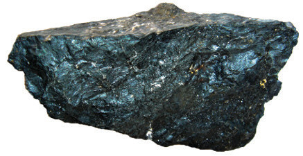

Chapter Three
Magnetism
Introduction
Knowledge of magnetism has provided several useful applications in daily life, starting from the historical navigation by the Greeks to the present-day digital world. In this chapter, you will learn the concept of magnetism and how materials can be magnetised or demagnetised. You will also learn about magnetic fields, including the Earth’s magnetic field. The competencies developed will enable you to apply the knowledge of magnetism in various contexts.
Concept of magnetism
Magnetism is a phenomenon produced by the motion of electric charges that results in an attractive and repulsive force between objects. The earliest observation of magnetism was recorded in 600 BC by the Greek philosopher Thales. He observed that pieces of iron were attracted to a natural mineral iron ore called magnetite. The lodestone is an example of a magnetised piece of the mineral magnetite. Figure 3.1 shows an iron ore.

The lodestone tends to attract certain metals more strongly at specific points on its surface than others. Any material that has properties similar to those of the lodestone is called a magnet. When magnets attract or repel each other, they exert a force called magnetic force. Magnetism arises from two types of electron motion as shown in Figure 3.2. The first is the motion of electrons around the nucleus of an atom. The second type of motion is the spin of electrons about their axes. These motions of charged particles independently impart a magnetic effect, causing an atom to behave like a tiny magnet.